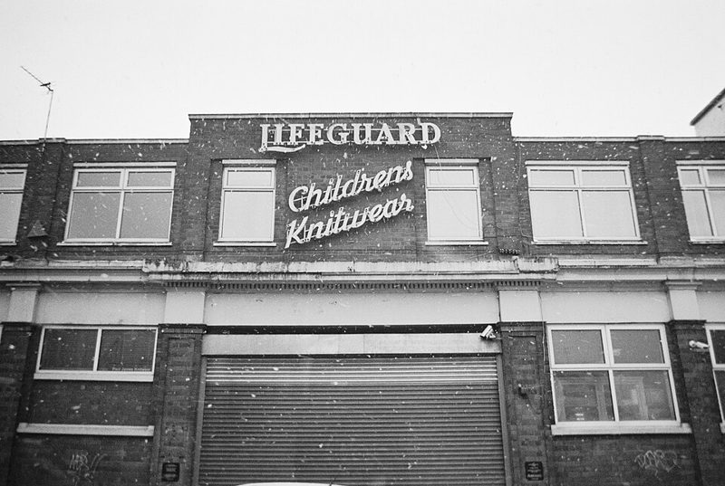

36 EXP. / 필름 / Ilford XP2 Super
Ilford XP2 Super
컬러 현상(C-41)으로 처리하는 흑백 필름. 흑백을 찍고 싶은데 흑백 현상소가 멀 때 정답입니다.

한눈에 보기
- 감도
- ISO 400
- 종류
- 흑백 네거티브 · C-41 현상
- 판형
- 135 · 120
- 이럴 때
- 거리, 여행, 흑백을 처음 시도할 때
- 가격
- $17.49
특징
- 결과는 흑백, 현상은 컬러 공정(C-41)
- 입자가 곱고 계조가 부드러움
- 어느 컬러 현상소에나 맡길 수 있음
찍을 때 팁
노출 관용도가 넓어 감도를 조금 바꿔 찍어도 무난합니다. 현상소에 "C-41 흑백"이라고 말하면 됩니다.
이 필름에 대해
흑백 필름은 받는 현상소가 적고 며칠 더 걸리는데, XP2 Super는 컬러 필름과 똑같이 맡기면 됩니다. 결과는 매끄럽고 부드러운 흑백입니다. 예시 사진은 XP2 Super로 찍은 영국 레스터의 건물입니다.
현상
컬러 네거티브 현상. 국내 대부분의 현상소에서 바로 맡길 수 있고, 35mm 한 롤 현상+기본 스캔은 대략 5천~8천 원, 고해상도 스캔은 1만 원 안팎입니다. 현상소 목록과 가격